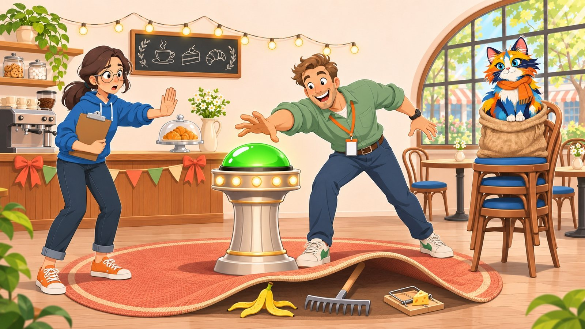
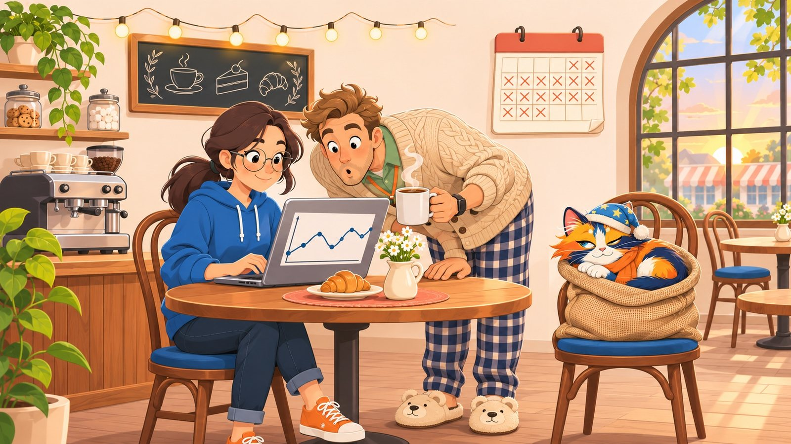
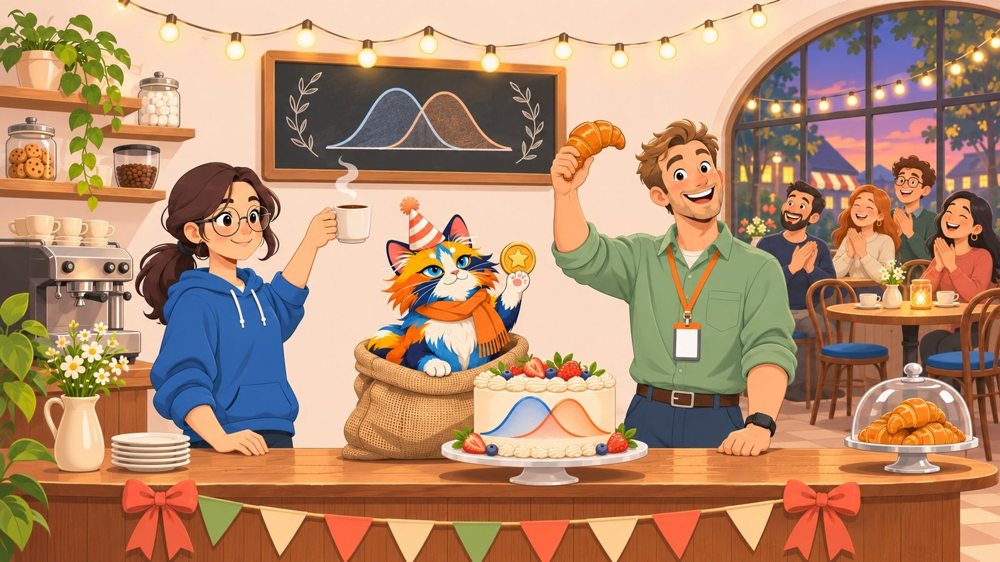

Шаг 10 из 10
Когда зелёное врёт

Мы научились отличать эффект от шума и читать интервал и p-value. Осталось последнее: способы обмануть себя, даже когда всё посчитано правильно.
Их три, и они встречаются постоянно: подглядывать каждый день, смотреть на десятки метрик и не замечать, что группы разделились неровно. В конце — тренажёр на пяти отчётах.
Боб смотрит отчёт каждое утро

Тест запланирован на 30 дней. Но Боб открывает отчёт каждое утро и готов выкатить фичу в первый же день, когда разница станет значимой.
Возьмём A/A-тест: обе группы видят одно и то же, эффекта нет. Если смотреть каждый день все 30 дней и остановиться при первом «значимо», как часто Боб найдёт эффект, которого нет?
Выбери вариант.
Тридцать утр с отчётом
Линия — насколько разница между группами больше обычного шума, день за днём. Серая полоса — обычный шум. Если линия вышла из полосы, отчёт в этот день показывает «значимо».
Каждый день — новый шанс, что шум выйдет за полосу
Двадцать метрик — хоть одна да покраснеет
В отчёте обычно не одна метрика, а двадцать: заказы, выручка, средний чек, отмены… Снова A/A-тест, эффекта нет нигде. Цветом отмечены «значимые» разницы.
Главная метрика выросла, а что сломалось?

Новый экран оформления: конверсия в заказ +4 %, значимо. Катим!
Изменение никогда не бывает точечным: ускорили оформление — нагрузка переехала на кухню и курьеров. Поэтому кроме главной метрики заранее выбирают несколько сторожевых: тех, что не должны ухудшиться.
| Метрика | Контроль | Тест | Δ % | 95 % ДИ Δ % |
|---|---|---|---|---|
| Конверсия в заказ · главная | 10,0 % | 10,4 % | +4,0 % | [+2,6; +5,4] |
| Время доставки · сторожевая | 38 мин | 43 мин | +13 % | [+10; +16] |
| Отмены · сторожевая | 3,0 % | 3,6 % | +20 % | [+12; +28] |
| Оценка заказа · сторожевая | 4,62 | 4,51 | −2,4 % | [−3,1; −1,7] |
Катим?
Новый экран так хорошо подгоняет к заказу, что кухня и курьеры не успевают: доставка дольше, отмен больше, оценки ниже. Сначала поднимаем мощность кухни и курьеров или разносим нагрузку, потом проверяем снова. Сторожевые метрики выбирают до запуска, вместе с главной.
Идея из книги: Джозеф О’Коннор, Иан Макдермотт, «Искусство системного мышления»
Задача о поездах
По железной дороге ходят поезда двух видов, поровну: короткие пассажирские по 5 вагонов и длинные товарные по 45 вагонов. Котейка в случайный момент выглядывает к переезду — а там идёт поезд.
Какой поезд Котейка будет видеть чаще?
Товарный поезд в 9 раз длиннее, значит, в 9 раз дольше стоит перед глазами. В случайный момент Котейка видит его в 9 раз чаще, хотя поездов поровну. Так же и в данных: если брать «кто сейчас в приложении», чаще попадаются те, кто сидит в нём долго. Типичный человек в логах — не типичный гость.
Идея из книги: Джозеф О’Коннор, Иан Макдермотт, «Искусство системного мышления»
Делили пополам, а получилось неровно

Тест на новый экран оплаты, сплит 50/50. В отчёте миллион пользователей: в контроле 508 000, в тесте 492 000, то есть 50,8 % против 49,2 %. Мелочь? Проверим, бывает ли такое случайно.
Где оказывается доля теста при честной монетке
При миллионе пользователей доля теста при честной монетке почти никогда не выходит за пределы 49,9–50,1 %. Наши 49,2 % значат, что где-то баг: например, новый экран падает у части людей и они не доезжают до логов. Тогда в тесте остались самые «живучие» пользователи, и сравнение нечестное.
В среднем ноль, а внутри — нет
Акция «второй кофе в подарок» за три недели дала 0 %. Выключаем.

Подожди. Давай посмотрим по кафе.
Эффект акции во всех кафе вместе — ноль
Алиса разрезала результат на 30 срезов: кафе, города, дни недели, iPhone и Android. В кафе у вокзала эффект +15 %, p = 0,04. Что делать?
Срез, найденный задним числом среди тридцати, — это гипотеза, а не результат. Её проверяют новым тестом, где кафе у вокзала — главная цель с самого начала.
Идея из книги: Владимир Савельев, «Статистика и котики»
Лучше в каждой группе, хуже в сумме
Функцию «Предзаказ» не тестировали, а просто дали включить желающим. Через месяц сравнили тех, кто включил, и тех, кто нет.
У тех, кто включил предзаказ, заказывают 22 %, а у остальных 38 %. Функция вредит, выключаем!
Давай разделим гостей на постоянных и новичков.
Почему в сумме «включившие» заказывают реже, хотя и среди постоянных, и среди новичков — чаще?
Среди включивших 800 новичков из 1000, среди остальных — только 200. Новички заказывают в три-четыре раза реже постоянных, и это тянет вниз общую долю. Так бывает, когда группы набирают сами себя. При честной монетке состав групп одинаковый, и такой переворот почти невозможен.
Поисковый тест ищет идеи, подтверждающий их проверяет
Ошибка — делать выводы по поисковому тесту так, будто он подтверждающий. Определи, какой тест перед тобой.
Запустили новую главную страницу и смотрим 25 метрик в 10 срезах: где что изменилось.
Много метрик и срезов — это поиск. Найденное здесь записываем в гипотезы и проверяем следующими тестами.
До запуска записали: «Кнопка „Повторить заказ“ в кафе у вокзала поднимет заказы на гостя. Главная метрика — заказы на гостя, 21 день, решение по 95 % вилке».
Одна гипотеза, одна главная метрика и правило решения, записанные до запуска, — это подтверждающий тест. По нему уже можно принимать решение.
Идея из книги: Дэвид Шпигельхалтер, «Искусство статистики»
Если бы вышло наоборот — что бы ты сказал?
Конверсия выросла — значит, новое меню понятнее. А если бы упала — значит, гости внимательнее его изучают. В любом случае меню удачное!
Что не так с рассуждением Боба?
Если подтверждением считается и рост, и падение, тест ничего не проверяет. Полезный вопрос к себе: «Если бы результат был обратным, принял бы я его как подтверждение?» Если да — проверки нет.
Ещё одна ловушка того же рода: мы привыкли искать подтверждения, а не опровержения.
Правило Боба: «Если гость получил промокод, он сделал повторный заказ». На каждой карточке — гость: с одной стороны, был ли промокод, с другой — был ли повторный заказ. Какие карточки нужно перевернуть, чтобы проверить правило?
Правило нарушает только гость, который получил промокод, но не сделал повторный заказ. Поэтому переворачиваем «получил промокод» (что на обороте?) и «не сделал повторный заказ» (был ли промокод?). Большинство людей выбирают «получил» и «сделал»: мы ищем подтверждения, а проверяют правило опровержения.
Идея из книги: Джозеф О’Коннор, Иан Макдермотт, «Искусство системного мышления»
Где Боб приукрасил дашборд
Цифры могут быть честными, а картинка — нет. Боб принёс пять графиков. Найди в каждом, в чём подвох.
«Тест обогнал контроль в три раза!»
Шкала начинается с 10 %, поэтому разница 10,2 % и 10,5 % выглядит трёхкратной. От нуля это почти одинаковые столбики: тест лучше на 3 %, а не в 3 раза.
Как это выглядит честно:
«Конверсия в новом разделе выросла на 50 %!»
Было 2 заказа из 40 гостей, стало 3 из 40. Формально это +50 %, но один заказ туда-сюда — чистая случайность. Когда видишь большой процент, спрашивай: «а в штуках сколько?»
Как это выглядит честно:
«Три дня подряд тест впереди — эффект стабильный!»
Тест шёл 21 день, и разница скакала то вверх, то вниз вокруг нуля. Боб показал только три удачных дня подряд. Смотри на весь период — и на итог, посчитанный заранее запланированным способом.
Как это выглядит честно:
«Через приложение заказывают в разы больше, чем по телефону!»
Заказов через приложение вдвое больше: 2 400 против 1 200. Но Боб увеличил стакан вдвое и в высоту, и в ширину, поэтому по площади он вчетверо больше, а глаз сравнивает именно площадь. Честно — столбики одной ширины.
Как это выглядит честно:
«Растём на 40 % в неделю — к Новому году будет миллион заказов!»
Шесть недель после запуска заказы и правда росли на 40 % в неделю: новое всегда растёт быстро. Но всё правее последней точки — фантазия Боба. Так рост не продолжается: приложение скачают все желающие, и кривая выйдет на плато.
Как это выглядит честно:
Раунды со стаканом и пунктиром — из книги: Дарелл Хафф, «Как лгать при помощи статистики»
Где Боб приукрасил цифры
Теперь подвох не в рисунке, а в самих числах. Пять фраз из отчётов Боба.
«Больше всего жалоб на курьеров в пятницу вечером — снимаем курьеров с пятницы!»
В пятницу вечером жалоб больше, потому что больше заказов. Если считать жалобы на 1000 заказов, пятница — самый спокойный день недели. Снимать курьеров нужно было бы скорее со вторника.
Как это выглядит честно:
«Конверсия выросла на 3 %!» Какой из графиков описывает фразу Боба?
«Выросла на 3 %» можно понять двумя способами: прибавилось 3 процента (с 3 % до 6 %, вдвое) или выросла на 3 % от себя (с 3 % до 3,09 %). Между ними разница в 33 раза. Всегда спрашивай: сколько было и сколько стало.
«После обновления активных пользователей стало на 18 % больше!»
В новой версии активным стали считать и того, кто открыл приложение в фоне, например ради уведомления. Мир не изменился — изменился учёт. Если пересчитать по старому правилу, линия ровная. Перед тем как радоваться скачку, проверь, не менялось ли в этот день, что и как считают.
Как это выглядит честно:
Новый онбординг даёт +26 % к заказам!
Что спросить первым?
Боб сравнил новый онбординг с прошлогодним, а не с тем, что работает сейчас. Нынешний онбординг уже даёт +24 % к прошлогоднему, так что новый лучше текущего всего на 1,6 %. Число без «по сравнению с чем» ничего не значит.
Как это выглядит честно:
«Новое меню не изменило время приготовления: 12 минут и там, и там».
Среднее время приготовления, мин
В новом меню есть быстрые блюда, которые готовятся за 3–4 минуты. Фильтр «короче 5 минут — ошибка логов» выбросил именно их, и вместе с ними эффект. Так NASA годами не замечало озоновую дыру: программа отбрасывала слишком низкие значения как сбой прибора. Прежде чем чистить данные, проверь, не чистишь ли ты сам эффект.
Как это выглядит честно:
В тесте появились быстрые заказы — их и выбросил фильтр
Идея из книги: Дарелл Хафф, «Как лгать при помощи статистики». Раунд с фильтром — из книги: Джозеф О’Коннор, Иан Макдермотт, «Искусство системного мышления»
Цифры честные, а смотреть невозможно
Бывает, что Боб ничего не приукрашивает, но график всё равно сбивает с толку. Три примера.
Боб хочет показать, что тест поднял конверсию. Что не так с графиком?
Метрики теста, разница с контролем
Боб вывалил на график все метрики сразу, и главная утонула. Честнее: главную линию — ярко, остальные — серым, а в заголовок — вывод, а не «Метрики теста».
Как это выглядит честно:
Конверсия в тесте выше контроля все 21 день
«С середины месяца средний чек обогнал заказы — гости стали заказывать дороже!»
Заказы (слева) и средний чек (справа)
Заказы и средний чек нарисованы на одном графике с двумя шкалами. Где они «пересекутся», зависит только от того, как Боб подобрал шкалы. Честно — два графика с общей осью дней: заказы чуть растут, чек чуть падает, и никакого «обогнал».
Как это выглядит честно:
Заказы чуть растут, средний чек чуть падает
Вопрос был: на что чаще всего жалуются гости? Что должно быть выделено цветом?
Причины низких оценок за месяц
Яркий цвет — это указка: туда посмотрят первым делом. Боб выделил «дорого», потому что хотел поговорить о ценах, а вопрос был про самую частую жалобу. Честно — выделить долгую доставку и написать это в заголовке.
Как это выглядит честно:
Чаще всего недовольны долгой доставкой
Идея из книги: Коул Нассбаумер Нафлик, «Данные: визуализируй, расскажи, используй»
Кладбище тестов
Одну и ту же хорошую идею проверяют в 20 разных командах. Настоящий эффект +3 %, но тесты короткие: уверенно они замечают только эффекты от 6 %. Каждая команда выкатывает фичу, если её тест «победил», а остальные тесты отправляются на кладбище.
Выкатывают только тех, кому шум подыграл
За год выкатили 5 фич, каждая победила примерно с +6 %. Чего ждать от общего роста заказов?
У победителей шум подыграл эффекту, поэтому их цифры завышены. Сумма приростов выкаченных фич всегда больше реального роста. Важные победы стоит перепроверять повторным тестом.
Идея из книги: Майкл Херцог, Майкл Фрэнсис, Аарон Кларк, «Статистика и планирование эксперимента для непосвящённых»
После плохой недели всё растёт само
Прошлая неделя была провальной, и мы запустили тест акции. За неделю заказы в тесте выросли на 9 %!
После провала выросли обе группы, а не только тест
Что на самом деле показал тест?
Провальная неделя — это отчасти невезение: погода, праздник, сбой. На следующей неделе всё само откатывается к обычному уровню. Это называют регрессией к среднему. Поэтому смотрим только на разницу с контролем, а не на рост «до и после».
Когда смотреть на результат
Эффект не всегда виден сразу и не всегда держится. Две истории:
Что попадёт в отчёт, зависит от дня, когда смотрим
Как выбрать, сколько длится тест?
Срок теста выбирают до запуска: он должен захватить и всплеск новизны, и момент, когда эффект может только начаться. Обычно это не меньше двух полных недель, а для редких действий — дольше.
Идея из книги: Саманта Клейнберг, «Почему»
В пилоте работало — почему на всех нет?
В пилоте на трёх кафе бесплатная доставка дала +15 % заказов. Запускаем на всю сеть из 40 кафе!
У сети общий пул курьеров. В пилоте лишние заказы трёх кафе курьеры легко развозили. Двигай ползунок: на сколько кафе включаем бесплатную доставку?
Чем больше кафе, тем дальше реальность от пилота
Что проверить перед тем, как раскатывать фичу из пилота на всех?
Пилот показывает эффект в своих условиях: курьеров хватает, кафе выбраны удобные, все стараются. При раскатке условия меняются. Поэтому раскатывают постепенно и смотрят на общие ресурсы — курьеров, кухню, поддержку.
Идея из книги: Саманта Клейнберг, «Почему»
Пять отчётов: что решаем?
Главная метрика в каждом тесте — конверсия в заказ. Зелёным и красным отмечены значимые изменения.
1. Фото блюд крупнее
| Метрика | Контроль | Тест | Δ % | 95 % ДИ Δ % | p-value |
|---|---|---|---|---|---|
| Конверсия в заказ | 10,02 % | 10,23 % | +2,1 % | [+0,8; +3,4] | 0,002 |
| Средний чек | 612 ₽ | 610 ₽ | −0,3 % | [−1,5; +0,9] | 0,62 |
| Отмены | 3,1 % | 3,1 % | +0,5 % | [−2,0; +3,0] | 0,70 |
Тест дошёл до конца, доли ровные, главная метрика выросла, и интервал целиком выше нуля. Средний чек и отмены не ухудшились. Катим.
2. Кнопка «Добавить соус»
| Метрика | Контроль | Тест | Δ % | 95 % ДИ Δ % | p-value |
|---|---|---|---|---|---|
| Конверсия в заказ | 9,98 % | 10,10 % | +1,2 % | [−0,6; +3,0] | 0,19 |
| Средний чек | 605 ₽ | 611 ₽ | +1,0 % | [−0,4; +2,4] | 0,16 |
Прошла только треть теста. Интервал широкий и задевает ноль, но решение по плану принимают через 21 день. Останавливаться сейчас — то самое подглядывание. Ждём.
3. Новый экран оплаты
| Метрика | Контроль | Тест | Δ % | 95 % ДИ Δ % | p-value |
|---|---|---|---|---|---|
| Конверсия в заказ | 9,91 % | 10,39 % | +4,8 % | [+3,9; +5,7] | < 0,001 |
| Выручка на пользователя | 61,4 ₽ | 64,1 ₽ | +4,4 % | [+2,6; +6,2] | < 0,001 |
Всё зелёное, но в тесте на 5 000 человек меньше, чем должно быть при 50 / 50. При 400 000 пользователей такой перекос случайно не бывает. Похоже, часть людей в тесте потерялась (например, экран у них падает), и остались самые активные. Ищем баг.
4. Рекомендации «Вам понравится»
| Метрика | Контроль | Тест | Δ % | 95 % ДИ Δ % | p-value |
|---|---|---|---|---|---|
| Конверсия в заказ | 10,05 % | 10,03 % | −0,2 % | [−1,1; +0,7] | 0,66 |
| Средний чек | 609 ₽ | 612 ₽ | +0,5 % | [−0,5; +1,5] | 0,33 |
Тест длинный и чувствительный: эффект от 1,5 % он бы заметил. Интервал узкий вокруг нуля, так что большого эффекта точно нет, а поддержка стоит денег. Не катим. Ждать дальше бессмысленно: тест уже закончился.
5. Новая иконка приложения
| Метрика | Контроль | Тест | Δ % | 95 % ДИ Δ % | p-value |
|---|---|---|---|---|---|
| Конверсия в заказ | 10,00 % | 10,04 % | +0,4 % | [−0,9; +1,7] | 0,55 |
| …ещё 13 метрик | ±1 % | задевают ноль | от 0,12 до 0,94 | ||
| Повторные заказы за неделю | 2,31 | 2,45 | +6,1 % | [+0,6; +11,6] | 0,03 |
Повторные заказы выросли на 6 %! Катим.
Главная метрика не изменилась. Из 15 метрик одна «прокрасилась» с p = 0,03, а при 15 метриках хотя бы одна такая в A/A бывает примерно в половине случаев. Это не повод катить. Если идея про повторные заказы интересна, её проверяют отдельным тестом, где это главная метрика.
Пять вопросов к цифре — из книги: Дарелл Хафф, «Как лгать при помощи статистики»
Как рассказать результат руководителю
Тест посчитан. Теперь его нужно рассказать так, чтобы за три минуты стало понятно, что делать. Порядок простой:
Какой заголовок лучше для отчёта про новый экран оплаты?
Хороший заголовок — это вывод и решение: прочитав только его, человек уже знает главное. Цифры и подробности — ниже, как доказательства.
Тест трёх минут
Собери отчёт из фраз: нажимай «В отчёт» в нужном порядке, а лишнее отправляй в приложение. Порядок в отчёте можно менять стрелками.
Идея из книги: Коул Нассбаумер Нафлик, «Данные: визуализируй, расскажи, используй»
Что запомнить
- Сравниваем одновременно, делим случайно. «До и после» и «кто включил против кто нет» смешивают эффект со всем остальным.
- Шум есть всегда. Даже одинаковые группы отличаются, вопрос только в том, больше ли разница обычного шума.
- Средние ложатся колоколом, и ширина колокола уменьшается как корень из числа людей.
- Эффект — это вилка. Смотрим на интервал: целиком выше нуля, задевает ноль или ниже.
- p-value — насколько удивительна такая разница, если эффекта нет. Это не вероятность того, что фича работает.
- Ошибки бывают двух видов: ложная тревога примерно в одном пустом тесте из двадцати и пропуск, когда тест короткий.
- MDE считают до запуска. Вдвое меньший эффект стоит вчетверо больше людей.
- Не подглядываем, выбираем главную метрику заранее, проверяем доли групп.
- Средний ноль может прятать плюсы и минусы, но срез, найденный задним числом, — только гипотеза для нового теста.
- Победители завышены, а сравнение «кто включил / кто нет» может перевернуть вывод из-за состава групп. Перепроверяем и делим монеткой.
- Не верим картинке на слово: шкала от нуля? сколько это в штуках? какой период показан?
- Заранее записываем главную и сторожевые метрики, срок и что будет провалом. Рост главной метрики не повод катить, если сломались сторожевые.
- Рассказываем выводом: заголовок — что получилось и что делаем, цифры — как доказательства.
И последние названия:
- Подглядывание
- остановка теста при первом «значимо» вместо запланированного конца
- Множественные сравнения
- много метрик или групп сразу, из-за чего случайные «победы» почти неизбежны
- SRM
- sample ratio mismatch, перекос групп: фактические доли не совпадают с планом, значит, где-то баг

Курс пройден. Теперь отчёт A/B-теста можно читать самому и задавать аналитику правильные вопросы: какой MDE, сколько дней по плану, какая главная метрика и ровно ли поделились группы.